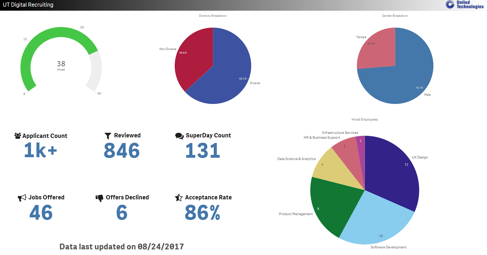
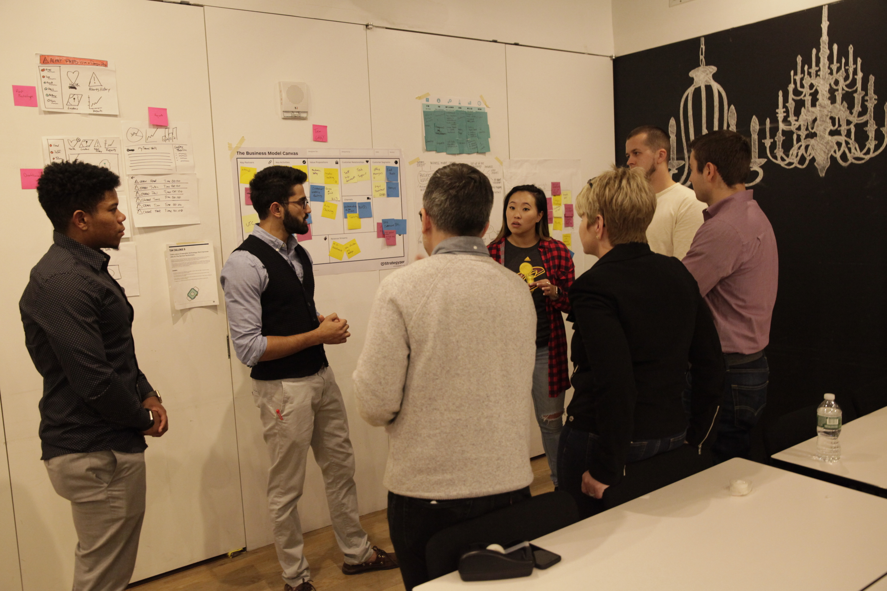
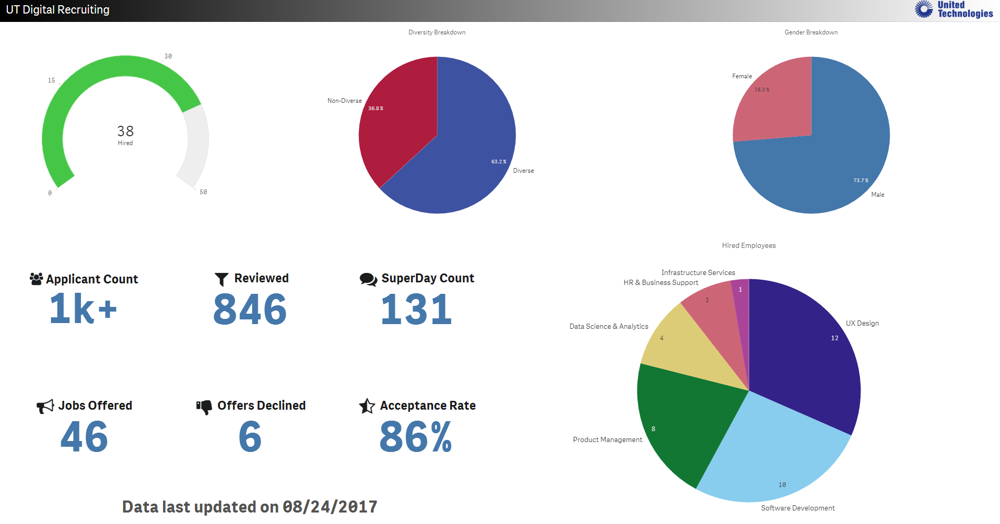
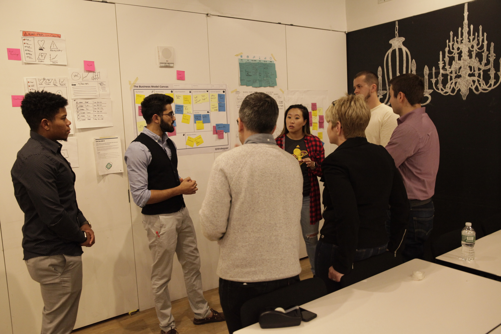
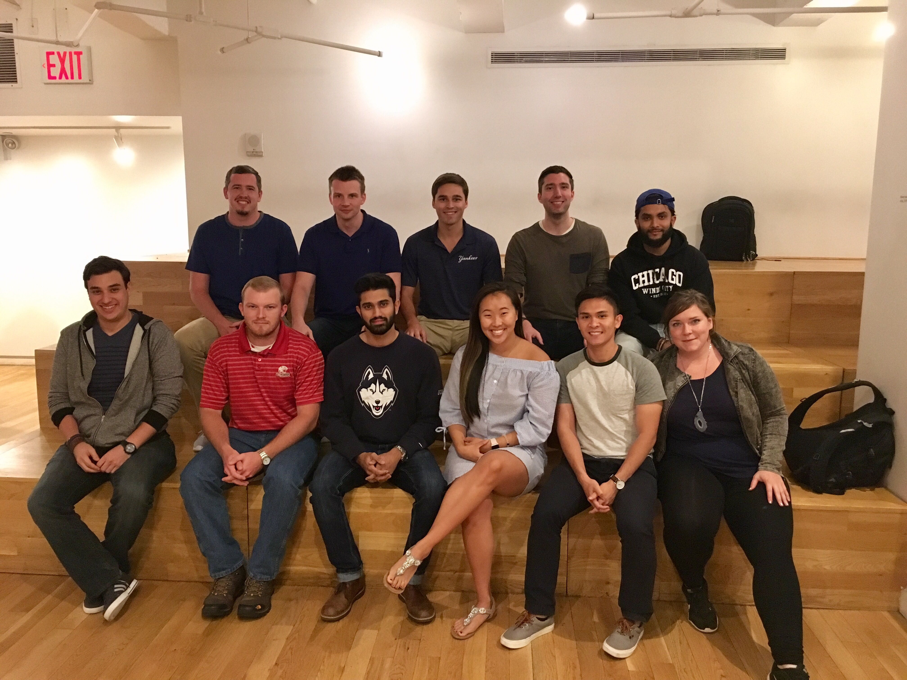
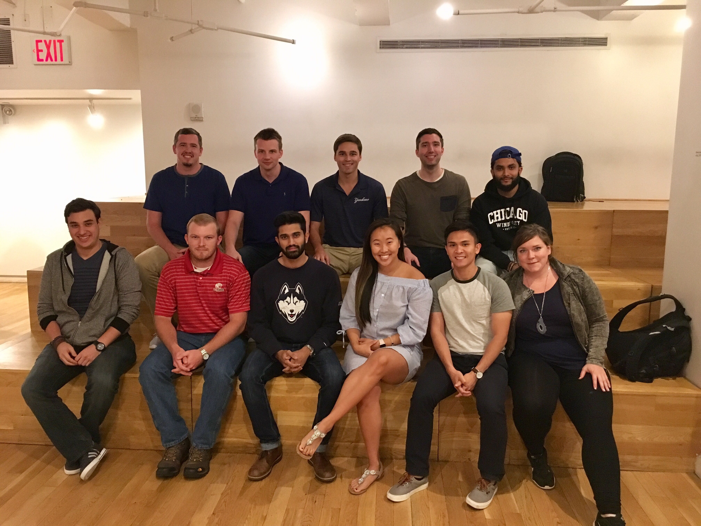
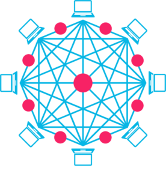
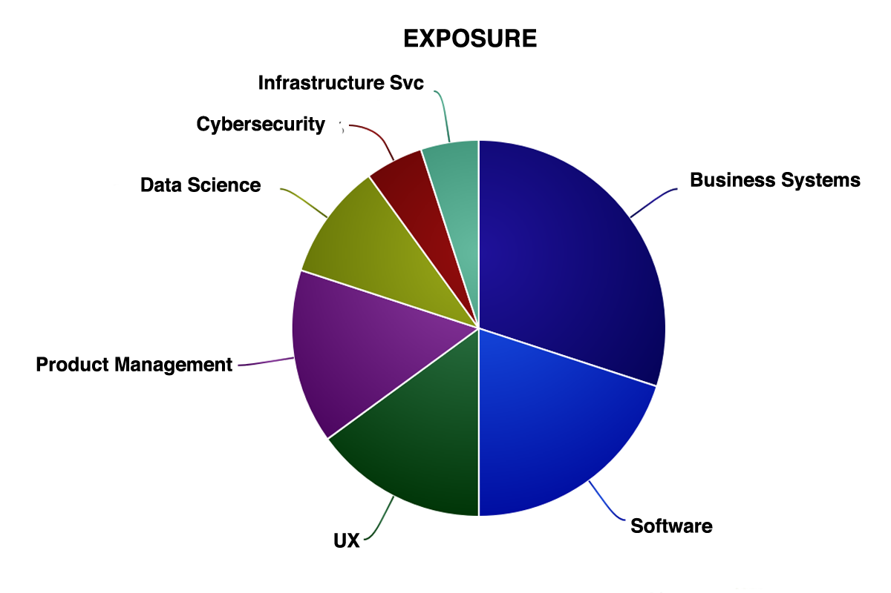

-
April - June
UT Digital RecruitingUT Digital Factsheet
QlikSense Recruiting Dashboard
Onboarding
WorkDay POC DTLP Bootcamp SharePoint 



-
July-Sept
Tool Stack Sourcing DTLP Bootcamp II Digital University MVP I Skills Assessment Kickoff 

-
Oct-Dec
Skills Assessment Digital University MVP II Tool Stack Sourcing Blockchain DiscussionsExperience
Digital StrategySkills Assessment
Front End DevelopmentHTML, CSS, JS
Application RolloutsLegal, IT Security, Infrastructure, IT Finance
Talent WorkstreamAttract, develop, and retain talent
Digital Resource in a Non-Digital EnvironmentChallenges
BureaucracyApp rollouts, lack of tools
Navigate through ambiguity"Every challenge is an opportunity in disguise"
-John Adams